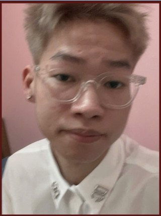
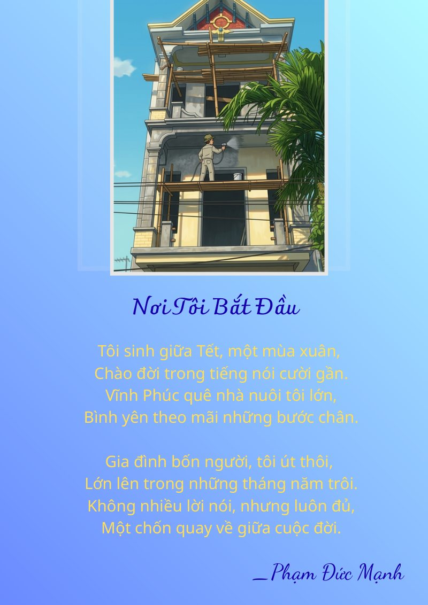
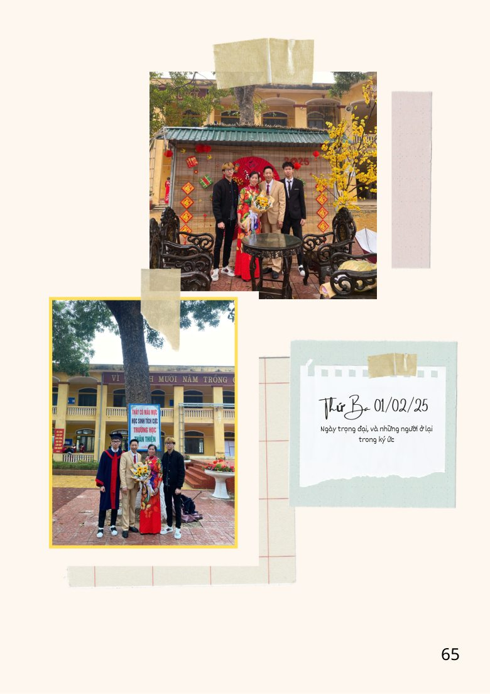
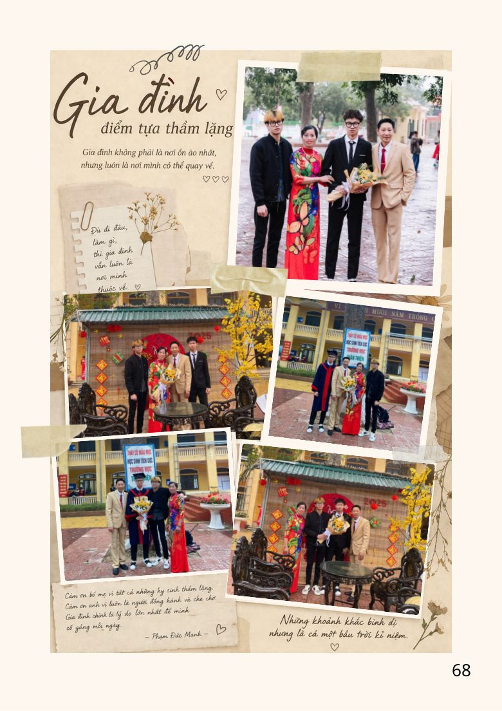
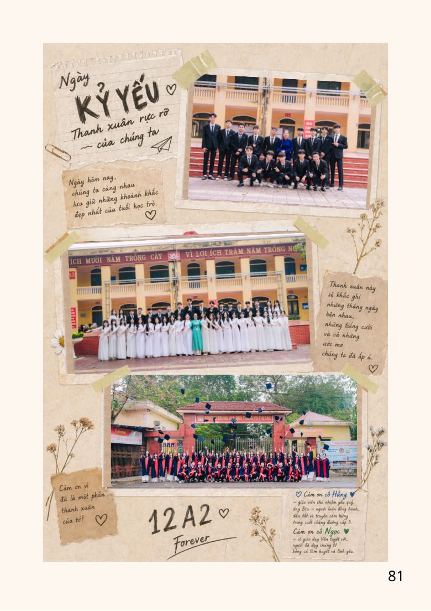
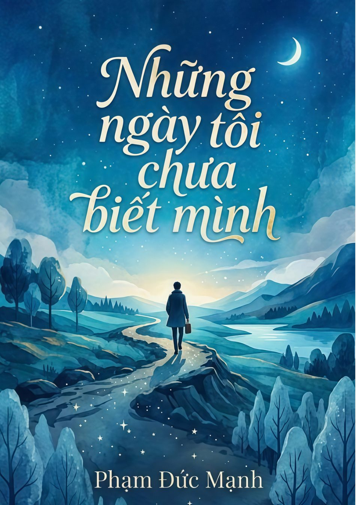

Tuổi thơ
Mầm non Phú Xuân A
Những ngày đầu làm quen với lớp học, gương mặt mới và cảm giác bỡ ngỡ khi lần đầu rời xa nhà trong vài giờ.
Một người trẻ lớn lên ở Vĩnh Phúc, đang học cách bước ra thế giới rộng lớn và hiểu rõ bản thân hơn qua từng trải nghiệm.
Đây là nơi t lưu giữ hành trình học tập, những người quan trọng, sở thích giản dị và một vài điều chưa từng nói hết bằng lời.

Không phải một bản hồ sơ hoàn hảo, mà là vài nét thật nhất về nơi tôi đến và con người tôi đang trở thành.

Nơi mọi câu chuyện bắt đầuTôi sinh vào những ngày đầu xuân năm 2007 và lớn lên ở Vĩnh Phúc. Trong ký ức của tôi, quê hương không cần điều gì thật nổi bật: chỉ những con đường quen, những khoảng trời rộng, nhịp sống bình dị và cảm giác luôn có một nơi để quay về.
Gia đình tôi có bốn người và tôi là con út. Hiện tôi đang học ngành Quản lý thông tin tại Trường Đại học Khoa học Xã hội và Nhân văn, Đại học Quốc gia Hà Nội.
Tôi khá trầm, hay suy nghĩ, thích tìm hiểu cách mọi thứ vận hành. Tôi không muốn giới thiệu bản thân bằng những điều quá lớn lao; tôi muốn được nhớ đến qua thái độ học hỏi và những việc mình thực sự làm.
Có thể cuộc sống của tôi không có nhiều bước ngoặt lớn. Nhưng chính những điều nhỏ bé đã âm thầm tạo nên con người mình.
— Cảm hứng từ lời mở đầu cuốn hồi kýNhững ngôi trường đã đi qua, những người thầy cô đã gặp và những bài học vượt ra ngoài trang vở.
Những ngày đầu làm quen với lớp học, gương mặt mới và cảm giác bỡ ngỡ khi lần đầu rời xa nhà trong vài giờ.
Một quãng thời gian nhẹ nhàng: học cách cố gắng, vui khi được ghi nhận và đôi khi thất vọng vì chưa làm tốt.
Tôi dần biết mình thích gì. Toán học trở thành một thử thách khiến tôi muốn kiên nhẫn tìm ra lời giải.
Ba năm có nhiều dấu ấn nhất: tình bạn, áp lực thi cử, những lựa chọn và cả sự thay đổi trong cách nhìn nhận bản thân.
Cô Ngọc – giáo viên Ngữ văn: Từng thấy Văn quá mơ hồ, tôi dần học được cách cảm nhận một bài viết và cả cuộc sống bằng nhiều góc nhìn. Điều còn lại sau những giờ học không chỉ là kiến thức mà còn là sự cởi mở.
Thầy Long – giáo viên Toán: Thầy từng đặt kỳ vọng vào khả năng học Toán của tôi. Có những kết quả chưa đạt như mong muốn, nhưng sự động viên của thầy khiến tôi hiểu rằng nỗ lực không thể chỉ được đo bằng một con số.
Cô Hạnh – giáo viên tiếng Anh: Một người thầy cô nữa được tôi viết về trong những trang hồi ký cấp ba, góp phần tạo nên ký ức của thời học sinh.
Bước vào môi trường mới, tôi nhận ra thế giới có nhiều lựa chọn hơn, nhưng cũng đòi hỏi mình chủ động và tự chịu trách nhiệm với những quyết định của bản thân.
Đôi khi, những sở thích nhỏ mới là cách dễ nhất để biết một người thực sự là ai.
Tôi thích thử nhiều môn: bóng đá, bóng bàn, bóng chuyền, cầu lông và đá cầu. Không phải môn nào cũng giỏi, nhưng được vận động và chơi cùng bạn bè luôn khiến tôi thấy thoải mái hơn.
Tôi thích sự rõ ràng và logic. Có bài toán phải thử nhiều cách, nhưng cảm giác tự tìm ra lời giải là một niềm vui rất riêng.
Sau giờ học căng thẳng, tôi có thể chơi game, nghe nhạc, xem video hoặc ngủ nướng một chút. Đó là cách lấy lại năng lượng cho ngày mới.
Tôi thích tự tìm cách sửa chữa, tháo gỡ vấn đề, khám phá một công cụ mới hoặc học một kỹ năng chưa từng thử. Sự tò mò khiến cuộc sống không nhàm chán.
“Không cần giỏi nhất một điều gì. Với tôi, được thử, được học và được tận hưởng cũng đã rất đáng giá.”
Gia đình, bạn bè và tuổi học trò. Có những khoảnh khắc nhỏ, đến khi nhìn lại mới thấy chúng quý giá đến nhường nào.

Tôi lớn lên trong gia đình bốn người. Bố mẹ làm nông, quen với những công việc vất vả của làng quê. Sự yêu thương trong nhà không phải lúc nào cũng thể hiện bằng lời nói.
Trong cuốn hồi ký, tôi kể về một ngày kỷ yếu đầu năm 2025. Giữa những cơn mưa nhẹ, cả gia đình cùng đứng chung trong một khung hình. Đó là điều giản dị mà tôi muốn lưu giữ thật lâu.
Gia đình · Năm cuối cấp · Kỷ yếu
Một nơi tôi có thể trở về mà không cần phải trở thành ai khác. Những điều nhỏ từ gia đình luôn âm thầm ở bên.
Có những tình bạn không bắt đầu từ một sự kiện đặc biệt; thời gian và những cuộc trò chuyện đã khiến chúng trở nên đáng nhớ.

Từ những người bạn còn xa lạ ở đầu lớp 10, chúng tôi dần trở thành những khuôn mặt quen thuộc trong ký ức nhau.
Ảnh lấy từ những trang hồi ký của tôi. Các ảnh có người khác có thể được thay hoặc ẩn trước khi chia sẻ rộng rãi.
Không kể lại những ngôi trường hay kỷ niệm ở trên. Phần này chỉ nói về những suy nghĩ, những điều tôi dần nhận ra và tương lai tôi đang hướng đến.

TÁC PHẨM CỦA TÔICuốn hồi ký bắt đầu từ một suy nghĩ rất giản dị: nếu một ngày nhìn lại, tôi muốn biết mình đã từng sống ra sao, từng suy nghĩ điều gì và đã dần thay đổi như thế nào.
Viết không phải để làm cho cuộc đời trở nên đặc biệt hơn. Với tôi, những trang viết giống một cuộc trò chuyện giữa bản thân của hiện tại và những năm tháng đã qua.
Tôi không cần mọi câu trả lời ngay hôm nay. Điều quan trọng là vẫn tiếp tục lắng nghe, học hỏi và tiến về phía trước.
Tôi nhận ra nhiều thay đổi không diễn ra thật ồn ào. Chúng hiện diện trong cách tôi suy nghĩ, trong lựa chọn nhỏ và cách tôi đối diện với những điều chưa làm được.
Có lúc tôi muốn sớm biết rõ mình sẽ trở thành ai. Nhưng sự mơ hồ cũng là một phần tự nhiên khi mình còn đang trải nghiệm và tìm hướng đi.
Tôi muốn bồi đắp sự kiên trì, khả năng thích nghi và một thái độ nghiêm túc với những gì mình làm, thay vì chỉ chăm chăm vào một đích đến.
“Cuốn sách này khép lại, nhưng hành trình của tôi thì không.”PHẠM ĐỨC MẠNH
Mỗi người có một câu chuyện. Biết đâu, một ngày nào đó, câu chuyện của chúng ta sẽ giao nhau.
Một đoạn video nhỏ để lưu giữ những khoảnh khắc bằng hình ảnh và âm thanh.
Nhấn Play để xem video. Video không tự động phát.